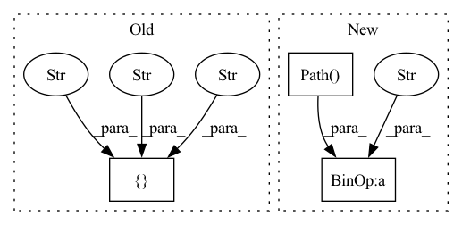

Pattern ID :35871

Before Change
encoder.update_from_didataset(dset, "phn", sequence_input=True)
for dset in dsets:
dset.add_dynamic_item("phn_enc", encoder.encode_sequence_torch, "phn")
dset.set_output_keys(["id", "wav", "phn_enc"])
align_brain = AlignBrain(hparams["modules"], hparams["opt_class"], hparams)
align_brain.fit(
After Change
def main():
experiment_dir = pathlib.Path(__file__).resolve().parent
hparams_file = experiment_dir / "hyperparams.yaml"
data_folder = "../../../../samples/audio_samples/nn_training_samples"
data_folder = (experiment_dir / data_folder).resolve()
// Load model hyper parameters:
In pattern: SUPERPATTERN
Frequency: 3
Non-data size: 3
Instances
Fragment ID: 101903858
Project Name: speechbrain/speechbrain
Commit Name: c9b83509f0a07e61ef75f23e359eec163c98ad12
Time: 2020-12-26
Author: mirco.ravabelli@gmail.com
File Name: recipes/minimal_examples/neural_networks/ASR_alignment_forward/example_asr_alignment_forward_experiment.py
M Class Name: AnonimousClass
N Class Name: AnonimousClass
M Method Name: main(0)
N Method Name: main(0)
M Parent Class:
N Parent Class:
M File Name: recipes/minimal_examples/neural_networks/ASR_alignment_forward/example_asr_alignment_forward_experiment.py
N File Name: recipes/minimal_examples/neural_networks/ASR_alignment_forward/example_asr_alignment_forward_experiment.py
M Start Line: 44
M End Line: 70
N Start Line: 100
N End Line: 126
'>
Before Change
encoder.update_from_didataset(dset, "phn", sequence_input=True)
for dset in dsets:
dset.add_dynamic_item("phn_enc", encoder.encode_sequence_torch, "phn")
dset.set_output_keys(["id", "wav", "phn_enc"])
align_brain = AlignBrain(hparams["modules"], hparams["opt_class"], hparams)
align_brain.fit(
After Change
def main():
experiment_dir = pathlib.Path(__file__).resolve().parent
hparams_file = experiment_dir / "hyperparams.yaml"
data_folder = "../../../../samples/audio_samples/nn_training_samples"
data_folder = (experiment_dir / data_folder).resolve()
// Load model hyper parameters:
'>
Fragment ID: 101903859
Project Name: speechbrain/speechbrain
Commit Name: c9b83509f0a07e61ef75f23e359eec163c98ad12
Time: 2020-12-26
Author: mirco.ravabelli@gmail.com
File Name: recipes/minimal_examples/neural_networks/ASR_alignment_viterbi/example_asr_alignment_viterbi_experiment.py
M Class Name: AnonimousClass
N Class Name: AnonimousClass
M Method Name: main(0)
N Method Name: main(0)
M Parent Class:
N Parent Class:
M File Name: recipes/minimal_examples/neural_networks/ASR_alignment_viterbi/example_asr_alignment_viterbi_experiment.py
N File Name: recipes/minimal_examples/neural_networks/ASR_alignment_viterbi/example_asr_alignment_viterbi_experiment.py
M Start Line: 46
M End Line: 72
N Start Line: 106
N End Line: 132
'>
Before Change
"set-b": "https://physionet.org/files/challenge-2012/1.0.0/set-b.zip?download", // noqa: E501
"set-c": "https://physionet.org/files/challenge-2012/1.0.0/set-c.tar.gz?download", // noqa: E501
}
self.OUTCOMES = [
"https://physionet.org/files/challenge-2012/1.0.0/Outcomes-a.txt?download",
"https://physionet.org/files/challenge-2012/1.0.0/Outcomes-b.txt?download",
"https://physionet.org/files/challenge-2012/1.0.0/Outcomes-c.txt?download",
]
self.COLUMNS = [
"Mins",
After Change
path: str = ".",
seed: int = None,
) -> None:
self.dataset_path = pathlib.Path() / path / ".torchtime" / "physionet_2012"
super(PhysioNet2012, self).__init__(
dataset="physionet_2012",
split=split,
train_prop=train_prop,
'>
Fragment ID: 101903856
Project Name: philipdarke/torchtime
Commit Name: b2519cb539c86e8471c692d7a3f469396a389cf5
Time: 2022-07-06
Author: 43066442+philipdarke@users.noreply.github.com
File Name: src/torchtime/data.py
M Class Name: PhysioNet2012
N Class Name: PhysioNet2012
M Method Name: __init__(12)
N Method Name: __init__(11)
M Parent Class: _TimeSeriesDataset
N Parent Class: _TimeSeriesDataset
M File Name: src/torchtime/data.py
N File Name: src/torchtime/data.py
M Start Line: 806
M End Line: 863
N Start Line: 665
N End Line: 669